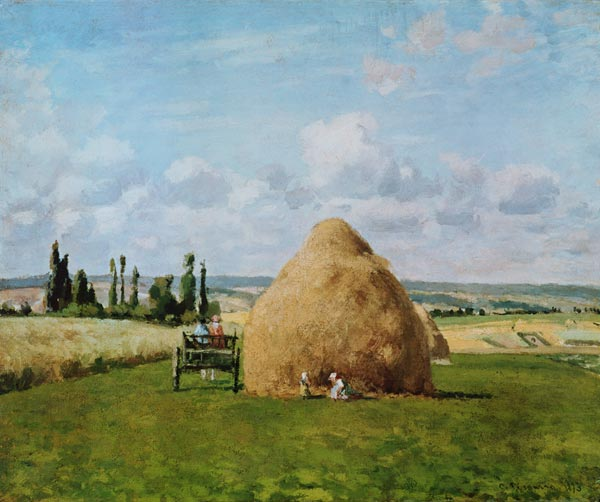

Camille Pissarro
El pintor francés, Jacob Abraham Camille Pissarro, es uno de los fundadores del Impresionismo. Era el mayor del grupo y el único que participó en las ocho exposiciones que celebraron.
Nació el 10 de julio de 1830 en Santo Tomás (Islas Vírgenes), era hijo de un próspero comerciante judío. A los 12 años viajó a París para realizar sus estudios y el ambiente de la ciudad despertó en él su interés por el arte.
The gardener, after-midday sun, Eragny - Camille Pissarro
The barn, Pontoise - Camille Pissarro

Diligencia a Louveciennes
Castaños en Osny
The Port of Le Havre